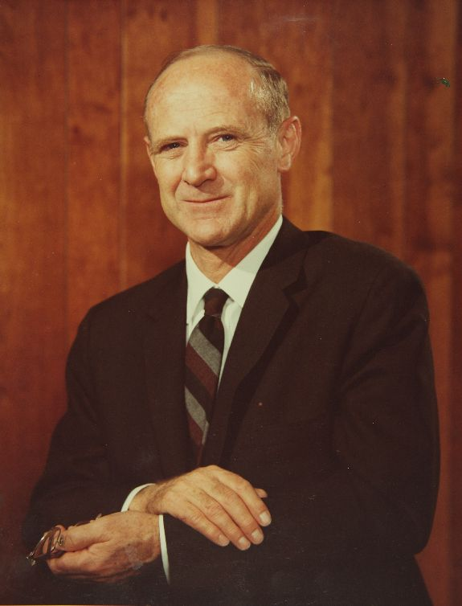
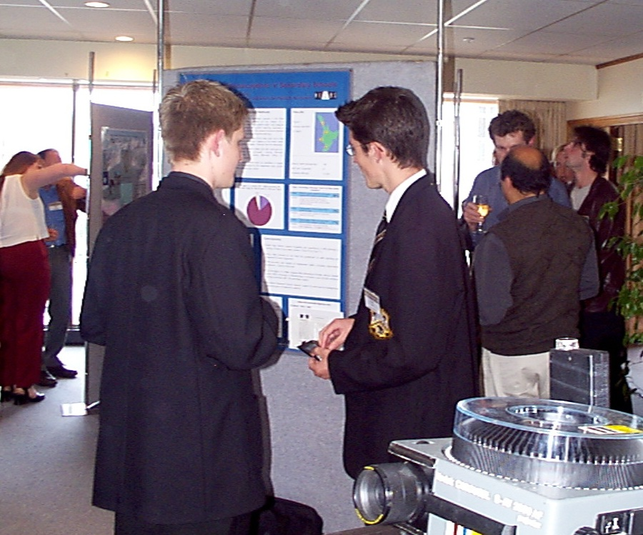
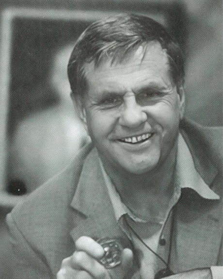
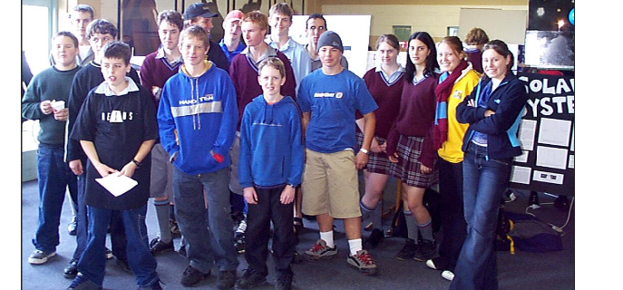

The Nexus Research Group
New Zealand's only secondary school-based research laboratory. Founded 1997. Motto: Question Everything.
In 1997, science teacher Michael Fenton was assigned what seemed an impossible task: teach practical science to a low-ability class in an 80-year-old classroom with no lab benches, no equipment, and no materials. That constraint became a methodology. By September 1997 the Nexus Research Group was founded at New Plymouth Boys' High School, Taranaki, with one explicit goal: to make authentic scientific practice accessible to learners of any age or ability, without requiring costly, fragile, or complicated equipment.
The Nexus Research Group was New Zealand's only secondary school-based research laboratory, and is believed to be unique in the Southern Hemisphere. Ahead of its time, it foreshadowed Design Thinking and the Maker Movement years before either term entered mainstream education. It operated to the standards of the international scientific community: students kept research logbooks, submitted findings to peer review, presented at national conferences, and published on the group's website, which received 5,000 unique visitors per month at its peak.
Patron: Dr Sir William H. Pickering
The group's patron was Dr Sir William H. Pickering, former director of NASA's Jet Propulsion Laboratory and the driving force behind the deep space missions that defined the early space age. Pickering, a New Zealander, lent his name and his endorsement to a group of school students conducting original research in Taranaki. His patronage was not ceremonial. It was a statement that the work warranted recognition at the highest level.

Bill Pickering, Rocket Man (PDF), published in the New Zealand Science Teacher journal and fact-checked by Dr Pickering.
What students did
Students of all ages and abilities worked as researchers, programmers, or technicians. Research areas included DNA isolation, antibiotic resistance genes, robotics, Caulobacter species isolation, light photomicroscopy using a webcam, forensic science, and educational game and software development. Each member was bound by a code of conduct and kept a research logbook, and findings were subjected to external peer review.
School students regularly won Science Fair awards, validating the approach of teaching to interests and abilities rather than age group. A Year 10 student from the 1999 research cohort was invited back two years later, as a Year 12 student, to present a full research poster to professional scientists at the New Zealand Microbiological Society conference. Conference documentation (PDF).
Membership of the Nexus Research Group included Jamie Fenton, who would eventually be named Young New Zealander of the Year in 2011 at age 17. Other members have gone on to highly successful careers.

Recognition and validation
The group attracted the attention of Massey University, which expressed formal interest in a partnership role, an unusual recognition of a secondary school group operating at university research standards. Its network of scientific advisers included Alvin Smith, a world authority on caliciviruses.

Professor David Penny (Emeritus Distinguished Professor CNZM FRSNZ, Massey University), on hearing that Michael Fenton was running a research laboratory from a secondary school with students as researchers, technicians, and programmers, made a distinction that has defined the career that followed:
"It looks like you are a teacher of science rather than a science teacher."
The difference is precise. A science teacher delivers established knowledge. A teacher of science produces knowledge in the mode of science, even when teaching. The impact on colleagues was equally direct. On Michael Fenton's departure from New Plymouth Boys' High School, the Head of the Science Department reflected:
"If someone had asked me whether there was a place for scientific research in a high school, I would have said No. Now I know better."
Beyond New Plymouth: Inglewood High School
By 2002 the group had relocated to Inglewood High School, demonstrating that the model was not dependent on a particular school, building, or budget, only on the founding principle that authentic science can be done anywhere by anyone motivated to ask a genuine question.

The legacy
The Nexus Research Group was not a programme or a curriculum initiative. It was a proof of concept: that secondary school students, given the opportunity and the tools, could conduct original scientific research to professional standards. Everything that followed in Michael Fenton's career is downstream of the question the group forced, how do you do authentic science with nothing?
The 2008 Ministry of Education E-Learning Fellowship extended the group's low-cost instrumentation work into mobile sensor technology. The Open Polytechnic programmes trained teachers throughout New Zealand to replicate the approach in their own classrooms. The 2025 Casio calculator data logger discoveries answered the founding question again, this time with a five-dollar solution to a problem that had defeated commercial manufacturers.
Archive
The founding and early operation of the Nexus Research Group is independently archived on Zenodo with a permanent DOI, as part of the longitudinal record on the Research Outputs and Publications page.
Fenton, C. D., & Fenton, M. (1999). Nexus (Nexus Research Group). Zenodo. https://doi.org/10.5281/zenodo.19365952
The archive includes original logos, the code of conduct, photographic documentation of activities through 2008, winning Science Fair projects, website screenshots, student work presented at conferences, and articles from The Good Teacher magazine, the only surviving copies since the magazine ceased publication. A fuller summary is also held as an archived PDF.
Science Fair projects on video
Short videos of award-winning Nexus Research Group Science Fair projects.
A levitating planet orbiting a star
A Physics investigation into forces with a striking result: a working model of a planet that appears to float and spin as it orbits a star. A balloon is suspended in the upward vortex of a hidden fan mounted on a revolving turntable, with a lamp at the centre, so the balloon floats in mid-air, spins on its axis, and is lit on the side facing the light.
Laser Wars
An Inglewood High School project, the first use of Picaxe microcontrollers, and a First Prize winner. A disposable camera's flash was repurposed to "shoot" a model of the Terminator T-800, which is deactivated when its Picaxe-08 infrared light sensor detects a direct hit. The working range was at least 200 metres.
Smart Mouse
A New Plymouth Boys' High School project, and the overall Grand First Prize winner of the Taranaki Science Fair. This is a technical subversion: a physical spiked wheel connected to pulleys operates a computer mouse button, turning it into a source of time-stamped input pulses for physics experiments.